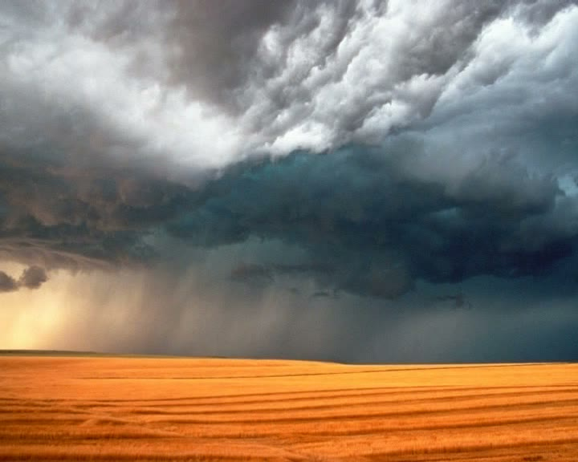
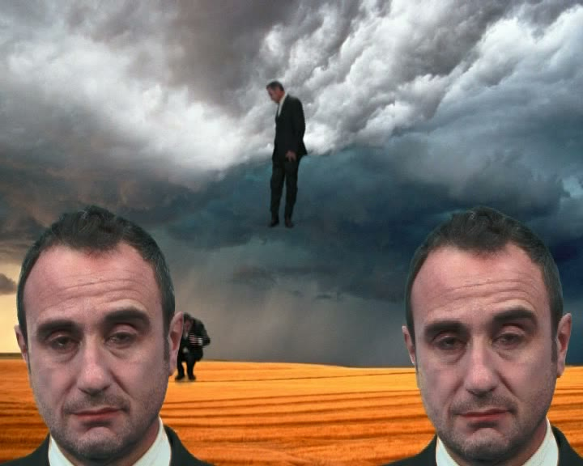
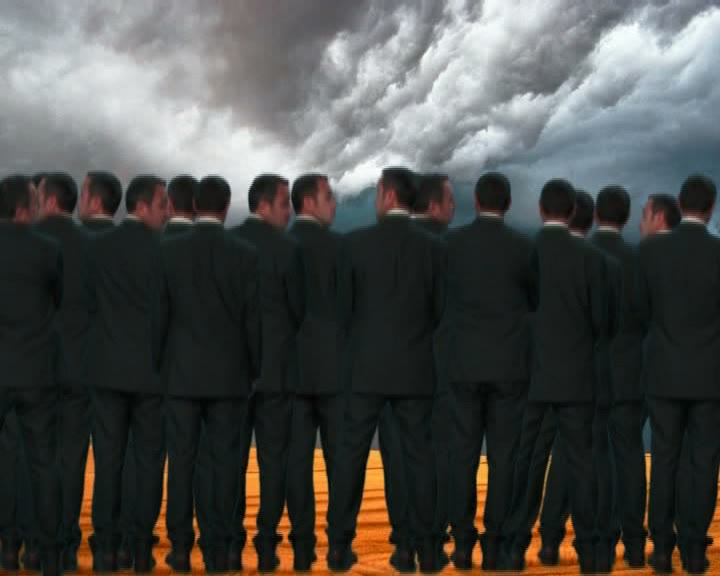
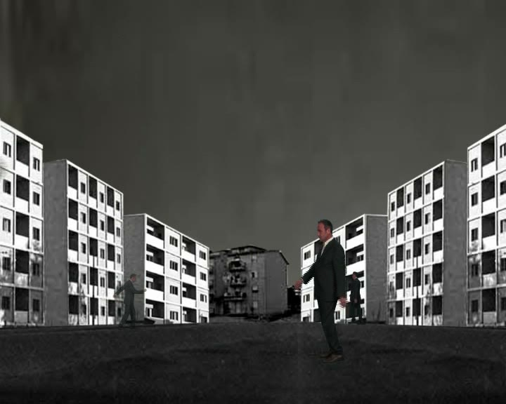
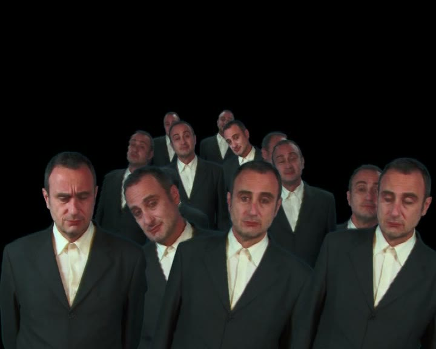
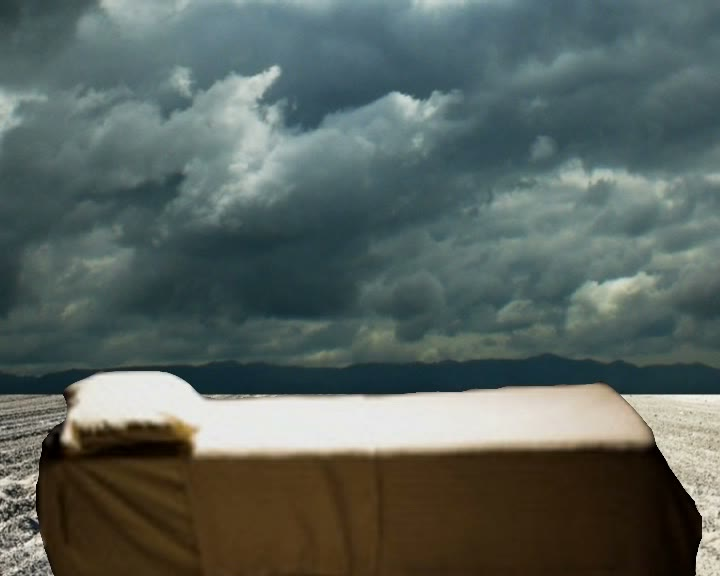
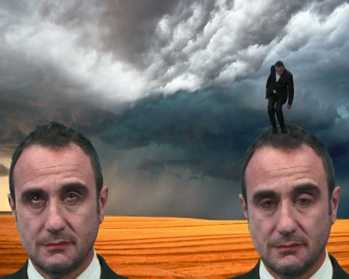

Un attore solo. Un pianoforte. Una soglia di immagini. Roma, Auditorium Parco della Musica, 16 dicembre 2010: prima assoluta dello spettacolo, prima collaborazione fra Cristian Taraborrelli e Danilo Rea, sotto la regia di Giorgio Barberio Corsetti.
A single actor. A piano. A threshold of images. Rome, Auditorium Parco della Musica, 16 December 2010: world premiere, first collaboration between Cristian Taraborrelli and Danilo Rea, directed by Giorgio Barberio Corsetti.
Un acteur seul. Un piano. Un seuil d'images. Rome, Auditorium Parco della Musica, 16 décembre 2010 : création mondiale, première collaboration entre Cristian Taraborrelli et Danilo Rea, sous la mise en scène de Giorgio Barberio Corsetti.
Commedia è uno spettacolo di e con Giorgio Barberio Corsetti, con le musiche dal vivo di Danilo Rea al pianoforte e i video di Cristian Taraborrelli. Debutta in prima assoluta all'Auditorium Parco della Musica di Roma il 16 dicembre 2010, prodotto da Fondazione Musica per Roma e Fattore K.
La produzione è uno dei lavori più intimi del ciclo Corsetti dell'epoca: un attore in scena, un pianista che improvvisa, e un apparato video che apre lo spazio in molteplici direzioni simboliche. Per Cristian è il primo incontro lavorativo con Danilo Rea.
Commedia is a stage work by and with Giorgio Barberio Corsetti, with live music by Danilo Rea on piano and video by Cristian Taraborrelli. It premieres at the Auditorium Parco della Musica in Rome on 16 December 2010, produced by Fondazione Musica per Roma and Fattore K.
The production is one of the most intimate works of Corsetti's cycle of that period: a solo actor on stage, an improvising pianist, and a video apparatus that opens the space in multiple symbolic directions. For Cristian it is the first working encounter with Danilo Rea.
Commedia est un spectacle de et avec Giorgio Barberio Corsetti, avec la musique en direct de Danilo Rea au piano et les vidéos de Cristian Taraborrelli. Il est créé en première mondiale à l'Auditorium Parco della Musica de Rome le 16 décembre 2010, produit par la Fondazione Musica per Roma et Fattore K.
La production est l'une des œuvres les plus intimes du cycle Corsetti de l'époque : un acteur seul en scène, un pianiste qui improvise, et un appareil vidéo qui ouvre l'espace dans de multiples directions symboliques. Pour Cristian, c'est la première rencontre de travail avec Danilo Rea.
La Visione — Una soglia di immagini in movimento
L'apparato video di Cristian per Commedia è costruito attorno a una grammatica della soglia: una figura sola contro un orizzonte nebbioso, un albero sospeso fra cielo e roccia, una distesa di palazzi popolari che si apre come un corridoio mentale, una folla di figure identiche di spalle che osservano un cielo tempestoso. Sono immagini che dialogano con l'iconografia dantesca senza illustrarla: la selva oscura, la moltitudine, la discesa, il viaggio.
Otto sequenze video — Intro, Teste, Muro, Passaggi, Curiosi, Letto, Albero, Sfondi — si alternano e si sovrappongono al pianoforte di Danilo Rea, che improvvisa attorno al gesto dell'attore. La scena non illustra il testo: lo amplifica, ne moltiplica il corpo, ne dilata il tempo.
Cristian's video apparatus for Commedia is built around a grammar of the threshold: a solitary figure against a misty horizon, a tree suspended between sky and rock, a stretch of working-class housing blocks opening like a mental corridor, a crowd of identical figures seen from behind watching a stormy sky. These are images that dialogue with Dantesque iconography without illustrating it: the dark wood, the multitude, the descent, the journey.
Eight video sequences — Intro, Heads, Wall, Passages, Curious Ones, Bed, Tree, Backgrounds — alternate and overlap with Danilo Rea's piano, which improvises around the actor's gesture. The scene does not illustrate the text: it amplifies it, multiplies the body, dilates time.
L'appareil vidéo de Cristian pour Commedia est construit autour d'une grammaire du seuil : une figure solitaire contre un horizon brumeux, un arbre suspendu entre ciel et roche, une étendue de barres d'immeubles populaires qui s'ouvre comme un corridor mental, une foule de figures identiques vues de dos qui observent un ciel orageux. Ce sont des images qui dialoguent avec l'iconographie dantesque sans l'illustrer : la forêt obscure, la multitude, la descente, le voyage.
Huit séquences vidéo — Intro, Têtes, Mur, Passages, Curieux, Lit, Arbre, Fonds — alternent et se superposent avec le piano de Danilo Rea, qui improvise autour du geste de l'acteur. La scène n'illustre pas le texte : elle l'amplifie, multiplie le corps, dilate le temps.
Galleria — Still video








I Collaboratori
Regia e interpretazione
Giorgio Barberio Corsetti (Roma, 1951)
Cofondatore della Gaia Scienza nel 1976, direttore del Festival d'Avignon (1996–99), del Romaeuropa Festival, della Biennale Teatro di Venezia (2010–12), del Teatro Argentina di Roma. Per Commedia firma regia, drammaturgia e interpretazione in scena: l'attore solo come asse della rappresentazione, in dialogo continuo con le immagini e con il pianoforte. La collaborazione con Cristian Taraborrelli attraversa più di un quarto di secolo — da Maria di Rohan alla Fenice 1999 fino al Pagliacci AR al Carlo Felice 2021 — come uno dei sodalizi più longevi del teatro italiano contemporaneo.
Musica dal vivo — pianoforte
Danilo Rea (Vicenza, 1957)
Pianista e compositore italiano, fra le voci più rappresentative del jazz d'autore europeo. Membro storico del Trio di Roma con Enzo Pietropaoli e Roberto Gatto, ha collaborato con Mina, Gino Paoli, Fiorella Mannoia, Pino Daniele, Domenico Modugno, Claudio Baglioni; ha portato in concerto le sue letture jazzistiche del repertorio lirico (cicli su Verdi, Puccini, Bellini). Per Commedia firma una partitura interamente improvvisata che dialoga con il gesto di Corsetti e con il flusso delle immagini, alla prima assoluta dell'Auditorium Parco della Musica di Roma del 16 dicembre 2010.
Video
Cristian Taraborrelli (Roma, 1970)
Per Commedia Cristian costruisce un apparato di otto sequenze video che attraversano lo spazio scenico come una drammaturgia parallela: figure solitarie in paesaggi simbolici, moltiplicazioni del corpo, prospettive distopiche di città, cieli tempestosi su orizzonti vuoti. Il dispositivo video non illustra il testo — lo apre, lo dilata, lo moltiplica.
Direction & Performance
Giorgio Barberio Corsetti (Rome, 1951)
Co-founder of Gaia Scienza in 1976, director of Festival d'Avignon (1996–99), Romaeuropa Festival, Venice Biennale Teatro (2010–12), Teatro Argentina in Rome. For Commedia he signs direction, dramaturgy and on-stage performance: the lone actor as axis of representation, in continuous dialogue with images and piano. The collaboration with Cristian Taraborrelli runs across more than a quarter century — from Maria di Rohan at La Fenice 1999 to Pagliacci AR at Carlo Felice 2021 — as one of the most enduring partnerships of contemporary Italian theatre.
Live Music — piano
Danilo Rea (Vicenza, 1957)
Italian pianist and composer, among the most representative voices of European auteur jazz. Historic member of the Roma Trio with Enzo Pietropaoli and Roberto Gatto, he has collaborated with Mina, Gino Paoli, Fiorella Mannoia, Pino Daniele, Domenico Modugno, Claudio Baglioni; he has brought to concert his jazz readings of the operatic repertoire (cycles on Verdi, Puccini, Bellini). For Commedia he signs a fully improvised score that dialogues with Corsetti's gesture and with the flow of images, at the world premiere of 16 December 2010 at the Auditorium Parco della Musica in Rome.
Video
Cristian Taraborrelli (Rome, 1970)
For Commedia Cristian builds an apparatus of eight video sequences that cross the scenic space as a parallel dramaturgy: solitary figures in symbolic landscapes, multiplications of the body, dystopian urban perspectives, stormy skies over empty horizons. The video device does not illustrate the text — it opens it, dilates it, multiplies it.
Mise en scène et interprétation
Giorgio Barberio Corsetti (Rome, 1951)
Cofondateur de Gaia Scienza en 1976, directeur du Festival d'Avignon (1996–99), du Romaeuropa Festival, de la Biennale Théâtre de Venise (2010–12), du Teatro Argentina de Rome. Pour Commedia, il signe mise en scène, dramaturgie et interprétation en scène : l'acteur seul comme axe de la représentation, en dialogue continu avec les images et le piano. La collaboration avec Cristian Taraborrelli traverse plus d'un quart de siècle — de Maria di Rohan à la Fenice 1999 jusqu'au Pagliacci AR au Carlo Felice 2021.
Musique en direct — piano
Danilo Rea (Vicence, 1957)
Pianiste et compositeur italien, parmi les voix les plus représentatives du jazz d'auteur européen. Membre historique du Trio di Roma avec Enzo Pietropaoli et Roberto Gatto, il a collaboré avec Mina, Gino Paoli, Fiorella Mannoia, Pino Daniele, Domenico Modugno, Claudio Baglioni ; il a porté en concert ses lectures jazzistiques du répertoire lyrique (cycles sur Verdi, Puccini, Bellini). Pour Commedia, il signe une partition entièrement improvisée qui dialogue avec le geste de Corsetti et avec le flux des images, lors de la création mondiale du 16 décembre 2010 à l'Auditorium Parco della Musica de Rome.
Vidéo
Cristian Taraborrelli (Rome, 1970)
Pour Commedia Cristian construit un appareil de huit séquences vidéo qui traversent l'espace scénique comme une dramaturgie parallèle : figures solitaires dans des paysages symboliques, multiplications du corps, perspectives distopiques de villes, ciels orageux sur des horizons vides. Le dispositif vidéo n'illustre pas le texte — il l'ouvre, le dilate, le multiplie.
Tags